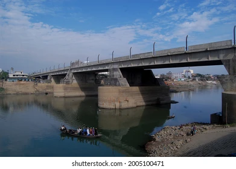

Engineering challenge
Project context and technical challenge
Designing long-span prestressed girders and deep foundations for a major river crossing.
Bridge over the Surma River in Sylhet incorporating 35 m and 50 m prestressed-concrete girder spans.
← Back to portfolio
Designing long-span prestressed girders and deep foundations for a major river crossing.
Designed PC girders, deck slab, abutment walls, piers, pier caps, bored piles and pile caps; prepared cost estimate and coordinated with contractors.